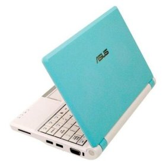

After drooling over it for a long time, and after some woes with eBay(*) I've finally ordered myself an Asus EEE today. It's an "ultraportable notebook", 22x16 cm in size (just imagine it - a mid-sized book) and weighing 900 grams. Some cool features: a solid-state hard disk - very small in the basic version (2 Gb), but easily expandable with memory cards (for which there's a built-in reader), 3 USB ports, Wifi, Linux (Xandros) preinstalled, > 3 hours battery life, and much more. I've ordered the basic version, because it doesn't include a webcam (which is important if I want to carry it with me to work), in sky-blue color.

As with anything popular these days, there is a plethora of information online, enough to spend hours reading and browsing through. As if I didn't have enough to do already :-)
(*) Regarding the order... The EEE costs $300 in the USA, but a whopping 2500 NIS ($690 by today's rate) here in Israel. B*stards !!! Amazon and the other big stores don't send electronics to Israel, so thankfully there's eBay. I've made my order from some electronics store in Kansas, paying $300 for the laptop and another $89 for the fastest express shipping (I really really want to get it before March 9th when I'm off to Munich for a conference). In order to "avoid" the customs tariffs, the store promised to tack a $50 gift price tag on it (I've heard of this scheme working before). But even with tariff, it will be way, way, cheaper than the $690 they want for it here.
I had a funny tackle with eBay, though. I've never used it before and registered just yesterday. The first thing I did was send a couple of inquiries to shops about the laptop. Guess what ? eBay immediately closed my account for "inappropriate use". Guess they thought I'm a spammer, but come on ! Couldn't they at least spam-filter my messages and see that I neither offer anyone to enlarge their private parts, nor post links to pr0n sites. After an angry protest, eBay reinstated my account after about 24 hours.
Anyway, I hope everything goes well and I'll get the laptop and manage to make it operational before I leave for Munich on March 9th. I'll report on the progress, of course :-)